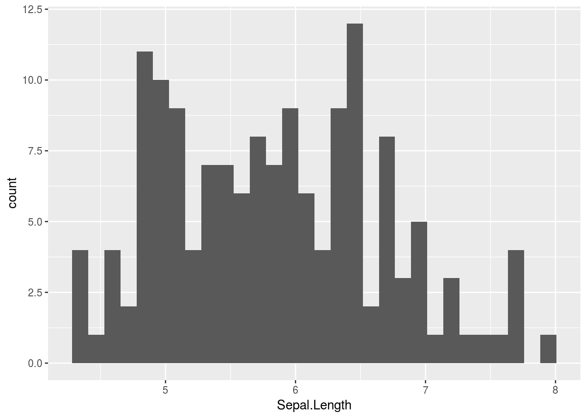
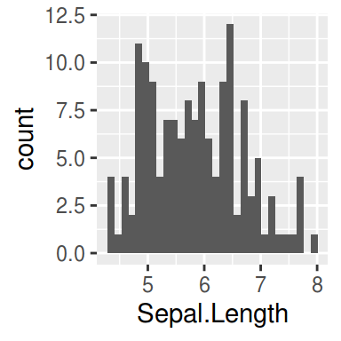
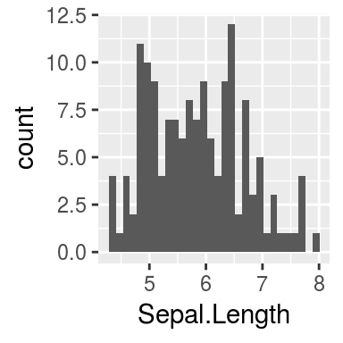
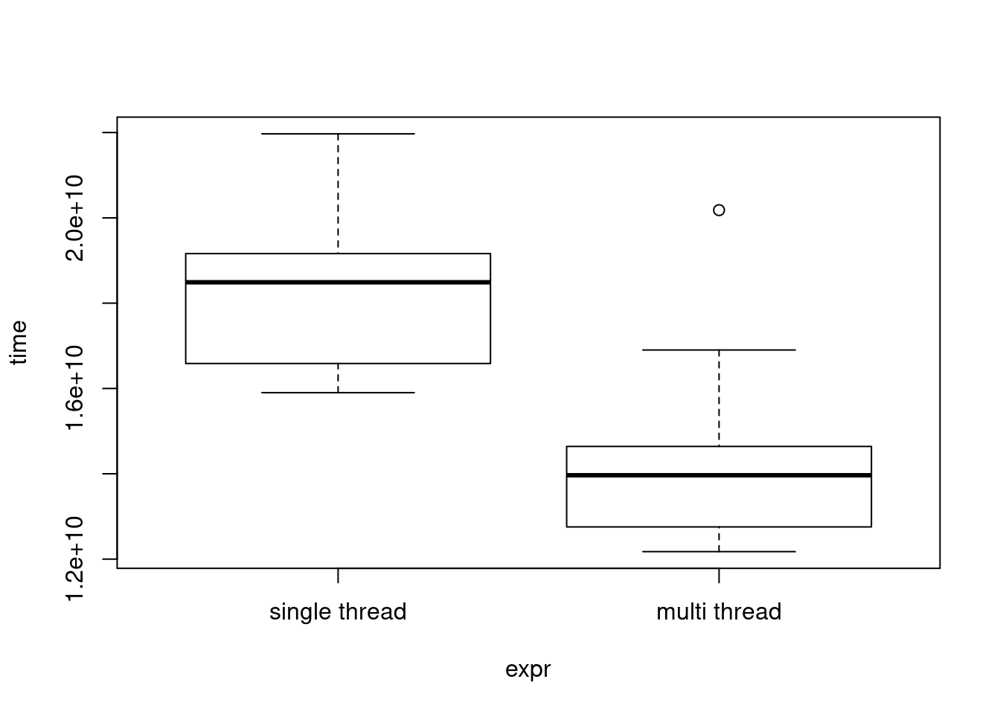

大きなデータを用いたggplotのリストや，大量のggplotのリストを高速に描写するための関数 print_gglist を作りました．
devtools::install_github('atusy/ggAtusy')で遊べます．
はじめに
ggplot2パッケージで作成したプロット (ggplotオブジェクト) はprintされる段になって，プロットに必要な計算を行っている．
つまり
# library(ggplot2)
g <- ggplot(iris, aes(Sepal.Length)) + geom_histogram()の段階では，irisのSepal.Lengthについて，ヒストグラムをプロットすることを記述しているだけで，ヒストグラム作成に必要なビン幅や，ビンごとの頻度までは計算していない．
g
として，gを図に出力する時になって始めて必要な計算が行われる．
このため，ggplotオブジェクトのリストをprintする際には，一つずつ，内部で計算することになる． 最後の最後のprint (グラフィックデバイスへの表示) は順次やるしかないが，計算部分は事前に並列処理させた方がいいのではないか．
実装
先の例のように，コンソールに単に g と入力した時は暗黙に print(g) している．
print 関数は与えられた変数のクラスに従って最適なメソッドを呼び出している．
ggplotオブジェクトに適切なメソッドは ggplot2:::print.ggplot だ．
ggplot2:::print.ggplot## function (x, newpage = is.null(vp), vp = NULL, ...)
## {
## set_last_plot(x)
## if (newpage)
## grid.newpage()
## grDevices::recordGraphics(requireNamespace("ggplot2", quietly = TRUE),
## list(), getNamespace("ggplot2"))
## data <- ggplot_build(x)
## gtable <- ggplot_gtable(data)
## if (is.null(vp)) {
## grid.draw(gtable)
## }
## else {
## if (is.character(vp))
## seekViewport(vp)
## else pushViewport(vp)
## grid.draw(gtable)
## upViewport()
## }
## invisible(x)
## }
## <bytecode: 0x55612d63ea28>
## <environment: namespace:ggplot2>上記のggplot2:::print.ggplot の実装を参考に，計算部分を並列化し，表示を順次行うようにしたものが以下のコード．
#library(pforeach) # install by devtools::install_github('hoxo-m/pforeach')
# library(grid)
# library(purrr)
print_gglist <- function(x, ...) {
pforeach(x = x, ..., .combine = c)({ # 計算を並列
list(ggplot_gtable(ggplot_build(x)))
}) %>%
walk(function(x) { # 順次出力
grid.newpage()
grid.draw(x)
})
}テスト
print_gglist(list(g, g))
ベンチマーク
先程のgを60個含むリストを出力するために必要な時間を計測する．
# library(microbenchmark)
g_list <- rep(list(g), 60)
bench <- microbenchmark(
'single thread' = walk(g_list, print),
'multi thread' = print_gglist(g_list, .cores = 3),
times = 10L
)
bench
plot(bench)## Unit: seconds
## expr min lq mean median uq max neval
## single thread 15.90173 16.58560 18.08624 18.48958 19.16229 21.97050 100
## multi thread 12.17476 12.75376 13.86049 13.96567 14.64058 20.18083 100
思ったほどの威力はないが，多少の高速化はできたようだ．